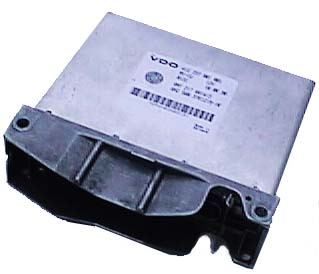

главная → ЭСУД STEYR
Назначение и состав системы управления
1. Электронная система управления двигателем ГАЗ-560.10 (далее—система) предназначена для оптимального управления исполнительными механизмами дизельного двигателя на основании анализа сигналов датчиков с помощью микропроцессорного контроллера.
2. Контроллер управления двигателем
Микропроцессорный контроллер управления двигателем фирмы «VDO» выполнен в едином корпусе и имеет выходной соединитель на 35-контактов. Контроллер предназначен для управления двигателем с целью достижения его оптимальных характеристик в зависимости от условий эксплуатации и обеспечения нормативной токсичности отработавших газов. На автомобилях «ГАЗ» контроллер устанавливается на щитке передка автомобиля. К жгуту проводов контроллер подключается с помощью розетки 963059-1 AMP (гнездо 0-927775-1 AMP типа «Лира» серии 2,8).

Адресация выводов контроллера
| № |
Обозначение |
Тип |
Цвет провода |
Наименование |
| 1 |
VBAT |
Питание |
Белый |
Неотключаемое напряжение (клемма 30) |
| 2 |
GND |
Питание |
Коричневый |
Общий вывод (масса цифровая) |
| 3 |
VREF |
Выход |
Розово-красный |
Опорное напряжения питания датчиков +5В |
| 4 |
EGV |
Выход |
Бело-зеленый |
Управление клапаном рециркуляции |
| 6 |
GPL |
Выход |
Серо-розовый |
Управление диагностической лампой |
| 7 |
GPR |
Выход |
Бело-красный |
Управление реле свечей накаливания |
| 8 |
TACHO |
Выход |
Оранжево-зеленый |
Управление тахометром |
| 9 |
ECT |
Вход |
Желто-зеленый |
Датчик температуры охлаждающей жидкости |
| 11 |
RPOS |
Вход |
Бело-голубой |
Датчик положения топливной рейки |
| 12 |
PED1 |
Вход |
Бело-черный |
Датчик № 1 положения газ-педали |
| 13 |
CRI |
Вход |
Оранжево-черный |
Включение реле стартера (клемма 50) |
| 17 |
VPROT2 |
Питание |
Розово-черный |
Питание электромагнита топливной рейки |
| 18 |
VPROT |
Питание |
Оранжевый |
Отключаемое напряжение от главного реле |
| 19 |
IGN |
Питание |
Розовый |
Зажигание (клемма 15) |
| 20 |
GNA |
Питание |
Черный |
Общий вывод (масса датчиков аналоговая) |
| 22 |
FPR |
Выход |
Желто-красный |
Управление реле электробензонасоса |
| 24 |
MR |
Выход |
Желтый |
Управление главным реле |
| 27 |
ACT |
Вход |
Желто-черный |
Датчик температуры воздуха |
| 28 |
MAP |
Вход |
Зелено-красный |
Датчик давления наддувочного воздуха |
| 30 |
PED2 |
Вход |
Бело-розовый |
Датчик № 2 положения газ-педали |
| 32 |
ISO-K |
Вход/выход |
Серо-красный |
К-линия диагностики |
| 33 |
RPM |
Вход |
Серо-черный |
Датчик частоты вращения коленчатого вала |
| 35 |
FMS |
Выход |
Красный |
Управление электромагнитом топливной рейки |
Примечание
- Вход —входной сигнал контроллера;
- Выход—выходной сигнал контроллера;
- Вход/выход —входной-выходной сигнал контроллера;
- Питание—электропитание контроллера.
- Цвета проводов жгута могут не совпадать и даны для справок.
—Для питания аналоговых датчиков системы контроллер формирует опорное напряжение +5 В (VREF). Общие выводы датчиков объединены в жгуте проводов и подключены к выводу 20 контроллера (GNA). Цифровая масса (GND) контроллера соединена с массой двигателя.
—После включения зажигания контроллер инициализируется и включает главное реле системы, которое запитывает цепь управления реле свечей накаливания и сам контроллер. В случае неисправности цепей датчика частоты (положения) коленчатого вала и/или датчика положения топливной рейки контроллер отключает главное реле и блокирует запуск двигателя. Управление двигателем контроллер осуществляет по заданной циклограмме (программе) управления в зависимости от состояния датчиков и исполнительных механизмов.
—После включения зажигания и при работающем двигателе контроллер выполняет диагностику цепей датчиков и исполнительных механизмов и в случае неисправности фиксирует в своей оперативной памяти код (коды) неисправности (неисправностей). При обнаружении кода неисправности контроллер включает диагностическую контрольную лампу, размещенную на панели приборов автомобиля. Считывание из контроллера и дешифрация кодов неисправностей может осуществляться с помощью диагностических приборов и программ по однопроводной двунаправленной К-линии связи, выполненной в стандарте ISO 9141.
—После включения зажигания и при работающем двигателе контроллер считывает и обрабатывает информацию, поступающую с датчиков системы, и формирует управляющие сигналы исполнительными механизмами в соответствии с измеренными и расчетными параметрами. Типовые параметры системы управления двигателем на режиме холостого хода приведены здесь. Считывание из контроллера и дешифрация параметров системы осуществляется с помощью диагностических средств и приборов по К-линии связи.
—Контроллер позволяет записать в долговременную оперативную память начальное положение топливной рейки, которое устанавливается при выполнении операции ее калибровки.
3. Датчики и измерительные каналы
–Датчик частоты вращения коленчатого вала
- предназначен для определения частоты вращения коленчатого вала двигателя (мин-1 или об/мин);
- датчик интегрального типа с чувствительным элементом на эффекте Холла, имеет вторичный преобразователь сигнала с открытым коллекторным выходом;
- датчик работает в паре с диском синхронизации (24 зуба) и установлен на корпусе распределительного вала. Электропитание на датчик подается от главного реле;
- выходной сигнал датчика имеет импульсную прямоугольную форму. Частота следования импульсных сигналов датчика (f) связана с частотой вращения распределительного вала (n) соотношением: n=f/(60*24);
- амплитуда сигнала:
- в активном состоянии (наличие зуба) < 0,4 В;
- в пассивном состоянии (отсутствие зуба) > 0,9*UБС;
- где UБС—напряжение бортовой сети.
–Датчик положения топливной рейки
- датчик положения топливной рейки предназначен для определения положения штока электромагнита, управляющего топливной рейкой;
- датчик потенциометрического типа. Расположен на корпусе распределительного вала на электромагните управления топливной рейкой;
- электропитание датчика +5В подается от контроллера;
- положение штока электромагнита изменяется в диапазоне 0...28 мм, при этом выходное напряжение датчика должно изменяться линейно в диапазоне 0,35...4,75 В.
–Датчик положения газ-педали
- датчик положения газ-педали предназначен для определения положения газ-педали;
- датчик двухканальный, потенциометрического типа. Установлен на электромеханизме управления газ-педалью в салоне автомобиля;
- электропитание для каждого из потенциометров датчика +5В подается от контроллера;
- диапазон положения газ-педали 0,0...5,0. Выходное напряжение датчиков должно изменяться линейно в диапазоне 0,35...4,75 В.
–Датчик давления наддувочного воздуха
- датчик давления наддувочного воздуха предназначен для измерения абсолютного давления воздуха, подаваемого в двигатель турбокомпрессором;
- датчик интегрального типа с чувствительным элементом полупроводникового типа, имеет вторичный преобразователь с аналоговым выходом;
- расположен на щитке передка автомобиля над двигателем;
- электропитание датчика +5В подается от контроллера;
- диапазон измеряемого давления 50...250 кПа, рабочий диапазон 1000...2300 мбар. Выходное напряжение датчика должно изменяться линейно в диапазоне 0,50...4,75 В.
–Датчик температуры охлаждающей жидкости
- датчик температуры охлаждающей жидкости предназначен для измерения температуры охлаждающей жидкости двигателя;
- датчик терморезистивного типа, установлен на корпусе водяного насоса двигателя;
- сопротивление датчика уменьшается нелинейно с ростом температуры:
- -20 °C—276,96 кОм;
- 20 °C— 37,34 кОм;
- 60 °C— 7,55 кОм;
- 120 °C— 1,19 кОм;
- электропитание на датчик подается от контроллера;
- диапазон измеряемой температуры -40...130 °C. Выходное напряжение на датчике должно изменяться в диапазоне 0,50...4,75 В.
–Датчик температуры воздуха
- датчик температуры воздуха предназначен для измерения температуры воздуха, подаваемого в двигатель;
- датчик терморезистивного типа, установлен на трубе между турбокомпрессором и воздушным фильтром. Конструктивно и по градуировочной характеристике идентичен датчику температуры охлаждающей жидкости;
- сопротивление датчика уменьшается нелинейно с ростом температуры:
- -20 °C—276,96 кОм;
- 0 °C— 95,57 кОм;
- 25 °C— 29,11 кОм;
- 120 °C— 1,13 кОм;
- электропитание на датчик подается от контроллера;
- диапазон измеряемой температуры -40...130 °C. Выходное напряжение на датчике должно изменяться в диапазоне 0,50...4,75 В;
- датчики температуры воздуха и охлаждающей жидкости являются взаимозаменяемыми.
–Канал измерения напряжения бортовой сети
–Канал контроля включения реле стартера
4. Исполнительные механизмы системы
–Электромагнит управления топливной рейкой
- электромагнит управления топливной рейкой (ЭУТР) предназначен для регулирования топливоподачи двигателя;
- ЭУТР расположен спереди справа на корпусе распределительного вала двигателя;
- управление величиной тока, протекающего через обмотку ЭУТР обеспечивает контроллер;
- средняя величина тока через ЭУТР должна быть не более 5 А;
- сопротивление обмотки ЭУТР должно быть 1,12+0,04 Ом;
- шток топливной рейки перемещается в диапазоне 3,5...20 мм, при этом необходимое тяговое усилие на штоке ЭУТР должно линейно изменяться (уменьшаться) от 42,5 Н до 30 Н.
–Электробензонасос
- электробензонасос (ЭБН) предназначен для подкачивания топлива в заборную магистраль насоса высокого давления;
- ЭБН проточный, роликового типа, устанавливается на автомобиле рядом с топливным баком на лонжероне кузова;
- включение ЭБН осуществляется от силового реле, которое управляется контроллером. Рабочий ток ЭБН не более 6 А при напряжении питания 12 В.
–Свечи накаливания (4 шт.)
- свечи накаливания (4 шт.) предназначены для пуска двигателя;
- свечи накаливания штифтового, запального типа. Размещены на каждом цилиндре двигателя;
- средняя величина рабочего тока свечи 12...15 А при температуре свечи более 200 °C. Время работы свечи при температуре окружающей среды, должно быть не более:
- - при 0 °C —4 с;
- - при минус 25 °C —20 с;
- включение свечей накаливания осуществляется от силового реле, которое управляется контроллером.
–Диагностическая лампа
- диагностическая лампа предназначена для индикации неисправностей в системе управления двигателем;
- лампа устанавливается на панели приборов автомобиля;
- включение лампы осуществляется контроллером. В случае обнаружения текущих неисправностей в системе контроллер включает диагностическую лампу и гасит ее, если неисправностей в системе нет;
- рабочий ток лампы не более 0,2 А при напряжении питания 12 В;
- если замкнуть К-линию на массу (выводы 1—2 на диагностическом соединителе жгута проводов), то контроллер переходит в режим вывода кодов неисправностей в форме световых вспышек. Вспышки кодов каждой неисправности повторяются три раза. Этот режим является режимом самодиагностики контроллера.
–Реле главное
- реле главное предназначено для подачи электропитания на контроллер, цепь управления реле свечей накаливания, датчик положения коленчатого вала и клапан рециркуляции;
- реле электромагнитного типа, с нормально разомкнутыми контактами, размещено на кузове автомобиля;
- электропитание реле выполнено от клеммы 30 бортсети. Силовая цепь реле защищена плавким предохранителем на 10 А, а обмотка управления—предохранителем на 5А;
- ток управления реле не должен превышать 0,2 А, а максимально допустимый ток в силовой цепи—30 А.
–Реле управления свечами накаливания
- реле управления свечами накаливания предназначено для подачи электропитания на штифтовые запальные свечи;
- реле электромагнитного типа, с нормально разомкнутыми контактами, размещено на кузове автомобиля;
- силовые цепи свечей накаливания защищены двумя плавкими предохранителями на 60 А;
- ток управления реле не более 0,5 А, максимально допустимый ток в силовой цепи не должен превышать 120 А.
–Реле электробензонасоса
- реле электробензонасоса предназначено для подачи электропитания на подкачивающий топливный насос;
- реле электромагнитного типа, с нормально разомкнутыми контактами, размещено на кузове автомобиля;
- электропитание на обмотку управления реле от клеммы 15 бортсети (зажигание). Силовая цепь реле подключена к клемме 30 бортсети через плавкий предохранитель 10 А;
- ток управления реле не более 0,2 А, максимально допустимый ток в силовой цепи не должен превышать 30 А.
–Клапан рециркуляции
- клапан рециркуляции предназначен для перепуска части отработавших газов с системы выпуска на впуск двигателя с целью снижения выбросов окислов азота в отработавших газах;
- клапан фланцевого типа, размещается на щитке передка автомобиля или на впускной трубе двигателя. Для отдельных исполнений двигателя может не устанавливаться;
- управление клапаном рециркуляции осуществляется импульсными сигналами переменной скважности частотой около 100...125 Гц. Средний ток потребления электромагнитной обмотки клапана не превышает 1 А.
–Все датчики и исполнительные механизмы объединены в электронную систему с помощью жгута проводов и соединены с контроллером управления двигателем и источником бортового электропитания с номинальным напряжением 12 В
|